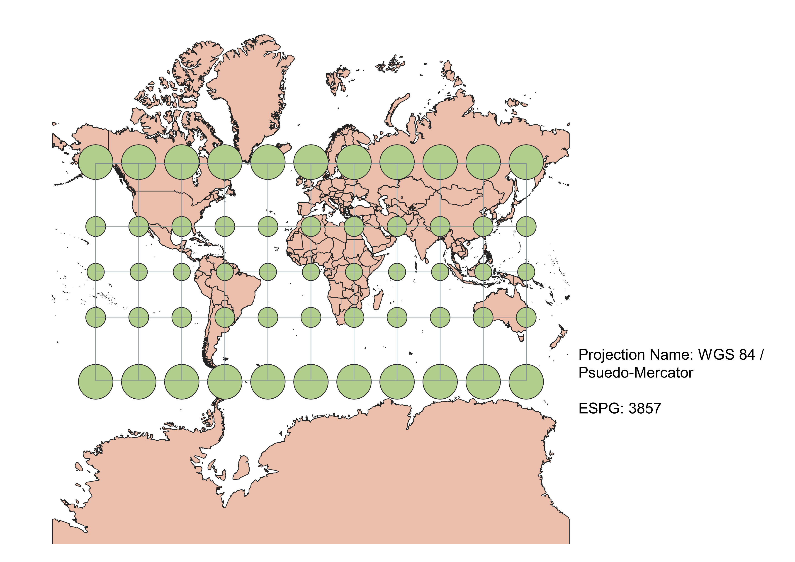
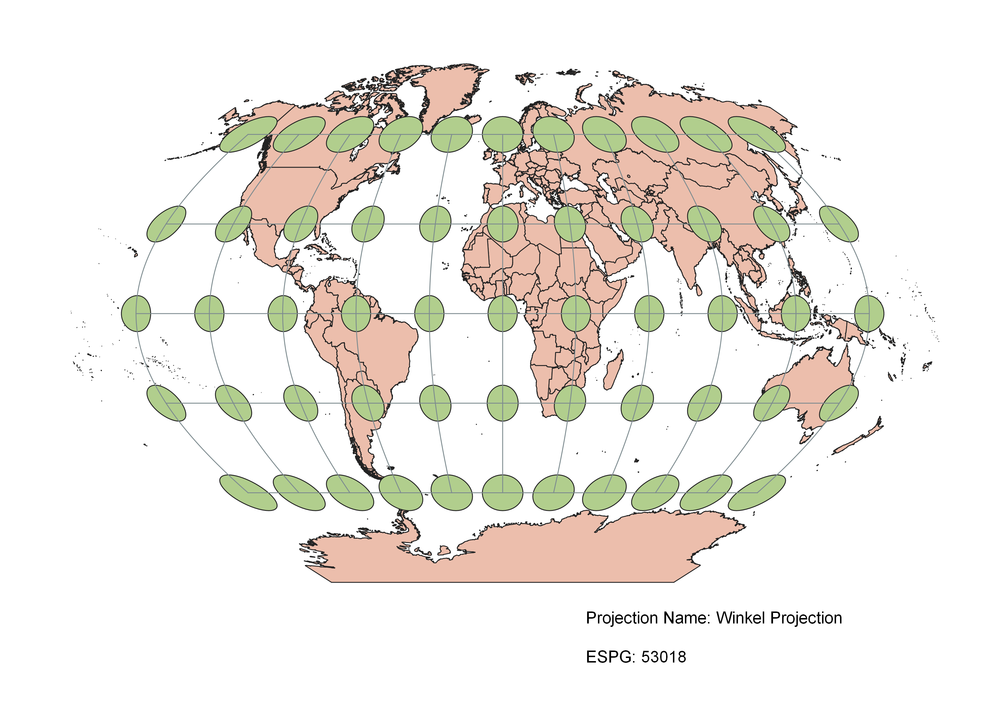
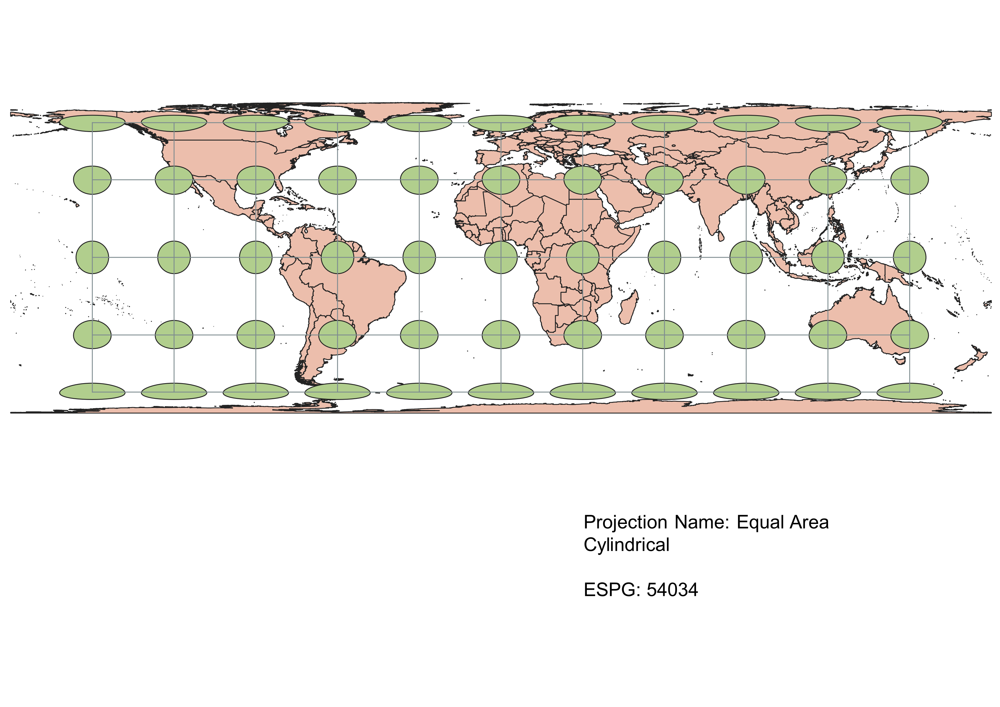
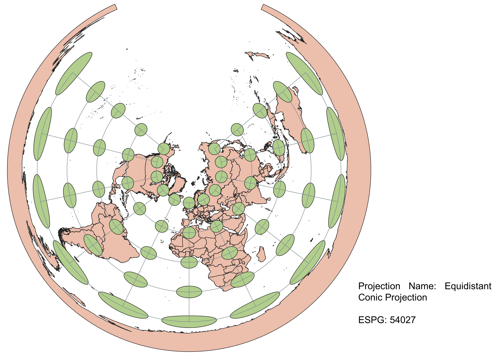
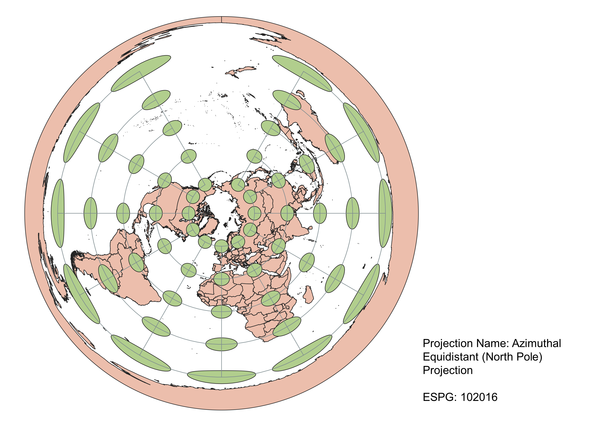
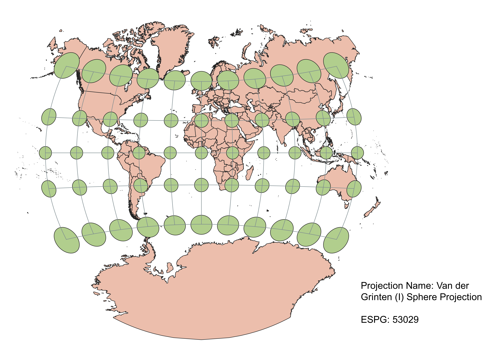
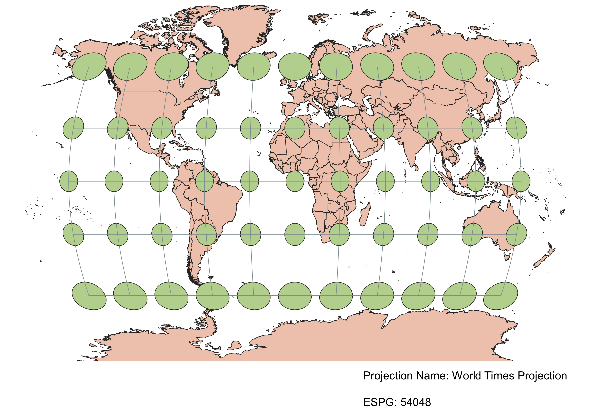

In this project I learned how to display images in different projections
How I displayed this map in different projections in QGIS
In QGIS, I displayed the same map in different projections by changing the EPSG value. Every projection has a unique EPSG value correlates with certain measurements and coordinates that distorts different aspects of a projection, whether that be shape, area, distance, direction, or any combination of them.
WGS84 Projection
The WGS84 Projection preserves direction and shape of the map by distorting the area and distance. This is visualized by how the coordinate lines form 90 degree angles but as the circles near the North and South Poles, they are stretched and squished.

Aitoff Projection
In the Aitoff Projection, shape, area, distance, and direction are all a little distortion. This distortion increases as you move away from the center of the map, but the benefit of distorting everything just a little, is that nothing is too different from reality. This map also curves at the sides, giving it a spherical effect that also helps emphasize that the Earth is not flat.

WGS 84 / Pseudo-Mercator Projection
The Pseudo-Mercator Projection is very commonly used in places like Google Maps because it is easy to visualize direction. The distance between the latitude lines increase as you move away from the equator, which is also seen as the size of the circles increase. This means that the area is distorted as you move towards the poles.

Winkel Projection
In the Winkel Projection, the equator and central meridian are both straight. All other longitude and latitude lines are distorted, meaning shape, area, direction and distance are all a little distorted the farther you get from the center.

Equal Area Cylindrical Projection
Some observations

Equitorial Conic Projection
Some observations

Azimuthal Equidistant (North Pole) Projection
Some observations

Van der Grinten (I) Sphere Projection
Some observations

World Times Projection
Some observations

Data used for this project
Download Natrual Earth 1:10m Cultural Vector